Milleaf is a Windows app that makes photo books from your VRChat screenshots. Choose a folder, and it groups similar shots and lays out the pages from a template. After that, you can change the photos, text and decorations page by page.
Choose photos
Load photos from the monthly folders and keep one shot from each burst or group of similar shots
Lay out
5 templates: Simple, Magazine, Film & Instant, Packed and Manga. Official add-on templates, sold separately, add more
Edit
Swap photos, change layouts, add text and decorations, mosaic, crop and adjust colors
Export
PDF, page images (PNG or JPEG), e-book (EPUB), print-ready files and a book you can read inside VRChat (unitypackage)
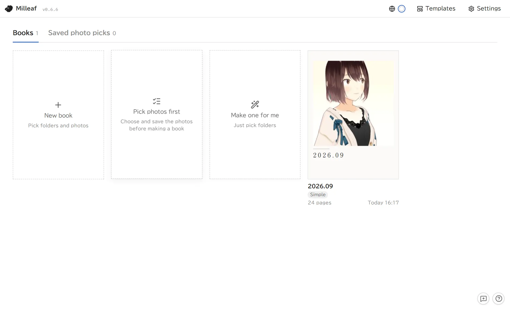
The shelf, where your books are listed
Requirements
OS
Windows 10 / 11 (64-bit)
Languages
日本語 / English / 한국어 / 繁體中文 / 简体中文 (switch with the globe button at the top right or in Settings)
Internet
Not needed. Milleaf never sends your photos or books anywhere
VRChat book
Only to make a book you can read inside VRChat: Unity, the VRChat SDK and Modular Avatar (section 6)
Full version and trial
The trial is free. Making and editing books works the same as in the full version. The trial limits how often you can export, and it cannot export or add templates.
Full version
Trial
Make and edit books
Yes
Same as the full version
Export
No limit
Up to 3 times a day, any format. The count resets when the date changes
Export templates (ZIP)
Yes
No
Add templates (including official add-ons)
Yes
No
Books and templates made in the trial open as they are in the full version.
2Install and start
There is no installer. You unzip Milleaf and run it.
Download the ZIP (Milleaf-(version)-win-portable.zip) from BOOTH.
Right-click the ZIP and open Properties. If there is an Unblock checkbox at the bottom, tick it and click OK. This cuts down the warnings when you start Milleaf.
Right-click the ZIP, choose Extract All and pick a folder. Avoid C:\Program Files, where Milleaf may not be able to save.
Double-click Milleaf.exe in the extracted folder.
If "Windows protected your PC" appears, click More info, then Run anyway. Milleaf is not code-signed, so this shows up the first time you run it.
Milleaf cannot run from inside the ZIP. If your antivirus blocks it, add the extracted folder to its exclusions.
Where your data is saved
Books, settings and templates are saved in %APPDATA%\Milleaf. To open it, go to Settings, Data location, Open folder.
This folder stays when you delete the app folder, so your books are still there after you update.
To carry Milleaf on a USB drive, create an empty folder named Milleaf-data next to Milleaf.exe before you start it. Your data is then saved there.
Milleaf only reads your screenshots. It never changes or moves them.
To remove Milleaf, delete the Milleaf folder and %APPDATA%\Milleaf.
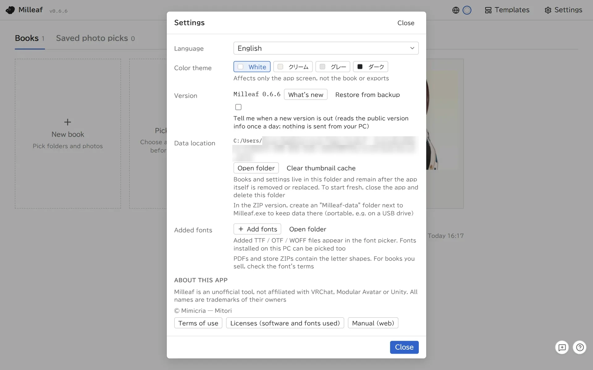
Settings: data location, backups and the terms of use
3Make a book
There are two ways.
Make one for me: choose folders, and Milleaf lays the photos out in every template so you can pick one. This is the quickest way.
New book: choose the photos yourself, then the template and page settings.
Screenshot folder
VRChat usually saves photos in Pictures\VRChat, in one folder per month (such as 2026-09). Milleaf looks there on its own.
If it cannot find them, or you keep photos somewhere else too, use Add location. Milleaf remembers the folders you add.
Tick the months you want in the list. Latest, Latest 3 and All select several at once.
Make one for me
On the shelf, click Make one for me.
Tick the months to use.
Choose the Book size (Fewer: 30 photos, Normal: 60, More: 110, or Use all) and the Text (None, Date only, or Date and world), then click Create.
The same photos appear laid out in every template. Click the card you like to make it a book.
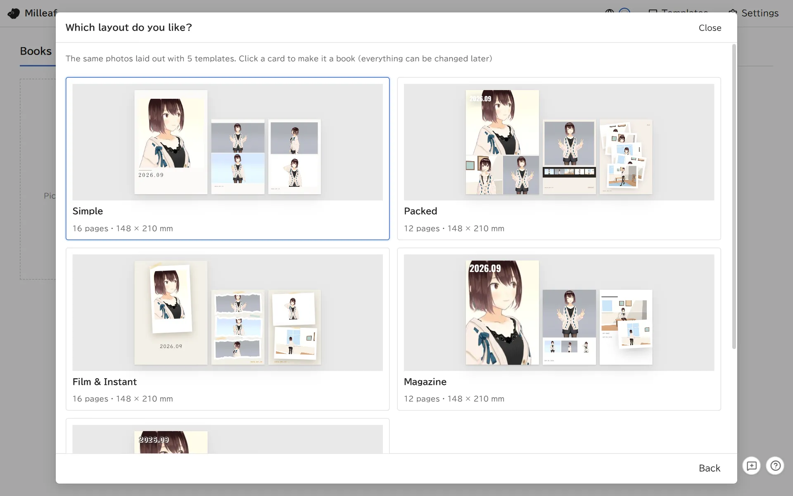
Make one for me: click a card to make the book with that layout
New book
On the shelf, click New book.
Photo folder: tick the months and click Load photos. For images from outside VRChat, use Add folder on the right.
Choose photos: every photo starts selected. Clear the ones you don't want.
Book settings: pick a template, set the title, photo density and other options, then click Make the book. The page count at the top right shows how many pages these settings make.
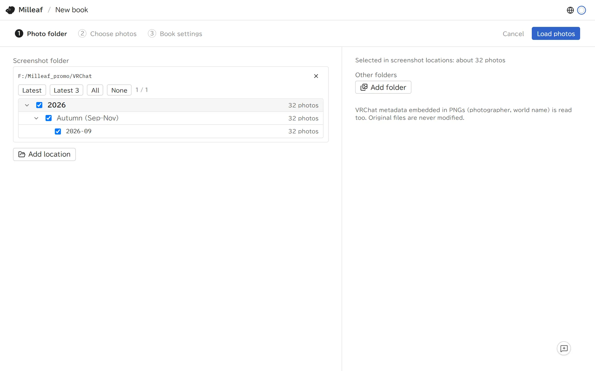
Photo folder: tick a month to use it
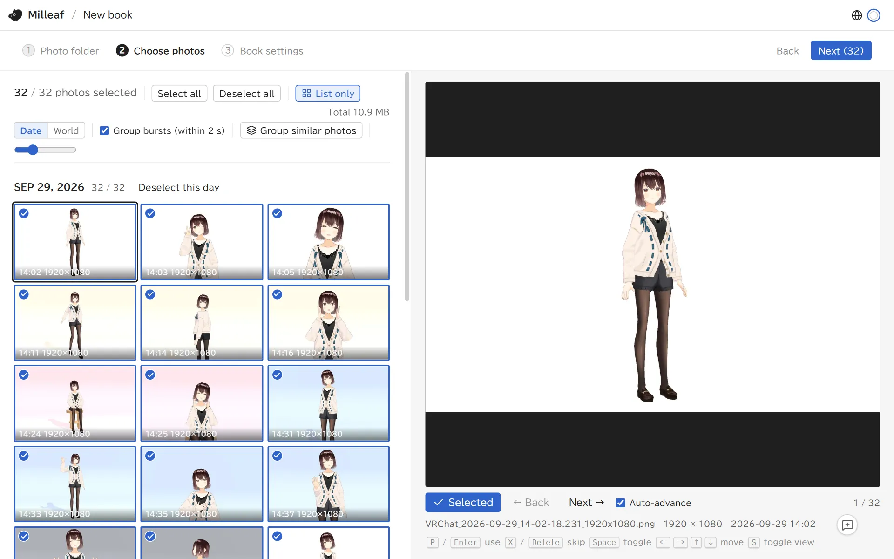
Choose photos: the large view on the right lets you decide one photo at a time
Keys on the Choose photos screen:
PEnterUseXDeleteDon't useSpaceSwitch between use and don't use←→↑↓Move to another photoSSwitch between the large view and the list
Group similar photos puts bursts and near-identical shots into groups and keeps the sharpest one. Open a group from its "+N" label to pick a different shot.
Switch to World to sort the photos by the world name saved in them.
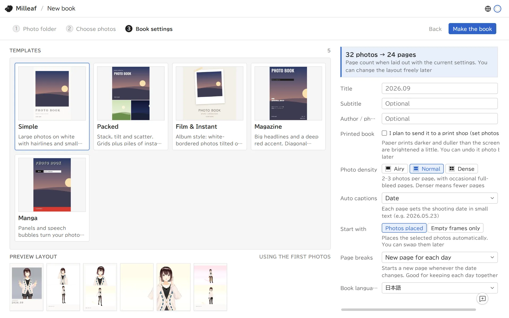
Book settings: templates on the left, title and photo density on the right
Printed book: tick this if you plan to send the book to a print shop. Milleaf then brightens the photos a little, because paper prints darker than a screen shows.
Under Start with, Empty frames only starts with a cover and a few pages and no photos.
The page size (such as A5) comes from the template.
Pick photos first
Pick photos first on the shelf lets you choose photos and save the selection under a name before you make a book. Saved selections are on the Saved photo picks tab. Use Make a book with these to start a book from one. Milleaf saves only which photos you chose. It does not copy the photos.
4Edit a book
Opening a book takes you to the editor: photos on the left, the page in the middle, settings for whatever you selected on the right, and the page list at the bottom.
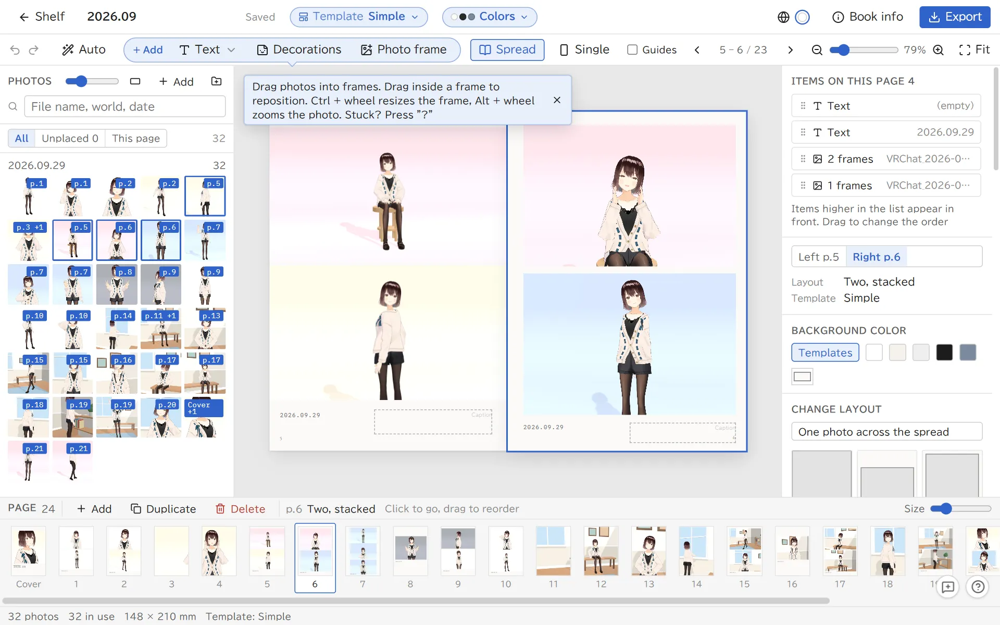
The editor. Drag photos from the left into the frames on the page
Saving: Milleaf saves as you go. Ctrl + Z undoes the last step.
Swap photos: drag a photo from the left into a frame. Drag one frame onto another to swap them.
Position and size: drag a photo inside its frame to move it, and use Alt + wheel to zoom. Drag a corner of the frame, or use Ctrl + wheel, to resize the frame.
Layout: select a page and pick one under Change layout on the right. The photos stay and only their arrangement changes.
Text, decorations and photo frames: use Add at the top. Double-click text to type in it. Speech bubbles are here too.
The whole book: Template at the top lays out the whole book again, and Colors changes the paper, text and accent colors. Book info has the title, binding, text size and colophon.
Pages: add, duplicate and delete pages in the list at the bottom. Drag to reorder them.
Redo the layout: Auto at the top lays out the whole book again with the same photos, or changes all the captions or the cover at once.
The ? button at the bottom right (or the ? key) lists what you can do on the current screen and the keys for it.
Photo editing
Double-click a photo in a frame to open Edit photo. Mosaic, cropping and color adjustments are all here.
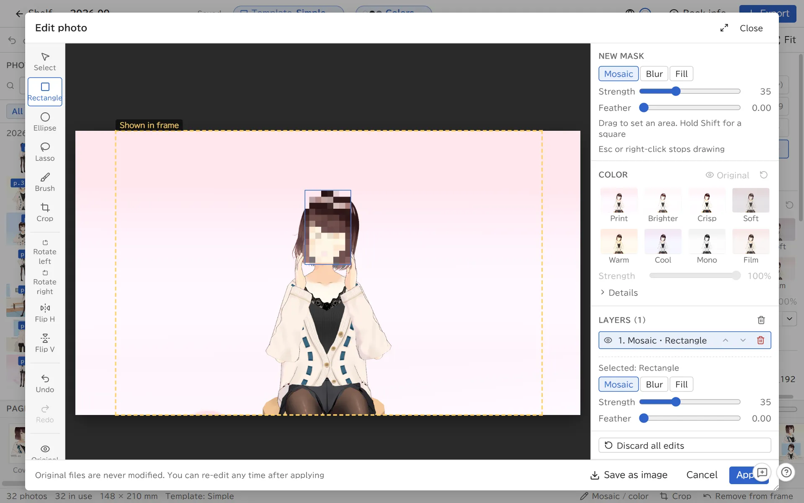
Edit photo, with a mosaic over a selected area
To hide people or name tags in the shot, mark the area with Rectangle, Ellipse, Lasso or Brush on the left, then choose Mosaic, Blur or Fill on the right.
You can also crop, rotate and flip here.
For color, pick a preset such as Print or Brighter, or move the sliders for brightness, contrast and so on. You can apply the same change to every photo from the same day or the same world.
Your original files are never changed. You can edit again at any time after you click Apply. Save as image saves the edited photo as a PNG or JPEG.
5Export
Click Export at the top right of the editor.
Pick a format and set its options.
Click Choose a folder and export, then choose where to save.
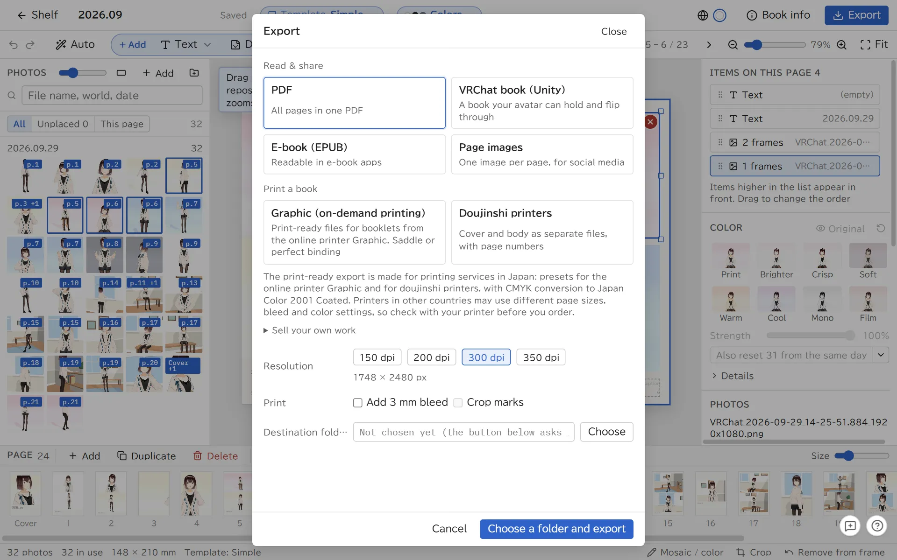
Export, with the formats grouped by use
Format
Use it to
Main options
PDF
Read, share, or print at home
Resolution (150 to 350 dpi), bleed, crop marks
Page images
Post on social media. One image per page
PNG (lossless) or JPEG (small), resolution
E-book (EPUB)
Read in an e-book app
Image size (1200 for phones, 1600 or more for tablets)
Graphic (on-demand printing)
Print a booklet with the Japanese online printer Graphic
Saddle stitch or perfect binding, paper, spine width, RGB or CMYK
Each export goes into its own folder inside the folder you chose, named like (title)_Milleaf-v(version)_PDF.
The trial can export up to 3 times a day, in any format. The export screen shows how many exports are left today.
Printing a book
Print-shop exports are 350 dpi with a 3 mm bleed and no crop marks.
Saddle stitch needs a page count that is a multiple of 4. Perfect binding needs an even count from 20 to 304 pages. The export screen tells you if the count does not fit.
The doujinshi printer export comes with a short note for the print shop (nyuukou.txt, in Japanese).
The print-ready export is made for printing services in Japan: presets for the online printer Graphic and for doujinshi printers, with CMYK conversion to Japan Color 2001 Coated. Printers in other countries may use different page sizes, bleed and color settings, so check with your printer before you order.
6Books you can read in VRChat
Milleaf can export a book that your avatar holds and that you can page through inside VRChat. It is for VRChat on PC. Quest is not supported.
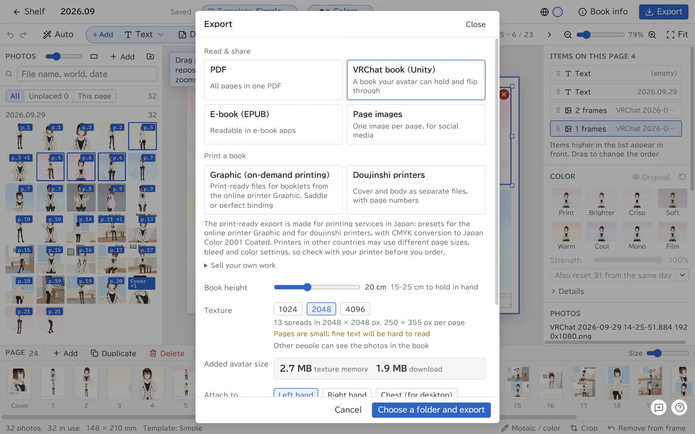
VRChat book options, including how much it adds to your avatar
What you need
A Unity project you can upload avatars from (Unity 2022.3 with the VRChat Avatars SDK; tested with 2022.3.22f1)
Modular Avatar (tested with 1.18). Add it to the project first with VCC (VRChat Creator Companion) or ALCOM
Export options
Choose the book height (15 to 25 cm for holding it), the texture size (1024, 2048 or 4096) and where to attach it (Left hand, Right hand or Chest). Chest is the easiest to read on desktop, without VR.
Added avatar size shows the texture memory and download size the book adds.
Other players can see the photos in your book.
Add it to your avatar
Open your avatar project in Unity and import the exported .unitypackage (double-click it, or use Assets → Import Package → Custom Package).
Drag Assets/Milleaf/(title)_(month and day)/Milleaf.prefab onto your avatar in the Hierarchy. It moves itself to the place you chose (a hand or the chest).
Upload the avatar as usual.
To turn the book, select Milleaf in the Hierarchy and change Rotation in the Inspector.
If the book sits in the wrong place in the hand, use Tools → Milleaf → 本を手に合わせ直す (fit the book to the hand again) in the Unity menu.
Importing a re-exported copy of the same book updates the old one. One avatar can hold one copy of each book.
The book's folder includes a README.txt.
Inside VRChat
Use the book's menu in your Expression menu.
Open
Take the book out or put it away
Next page, Previous page
Turn the spread. After the last spread it goes back to the first
Choose page
Turn the dial to pick a spread
Turn with finger
Touch the outer edge of a page to turn it. Other players can turn pages this way too (turn off Turn with finger or Others can turn pages to stop this)
On desktop, without VR, use Next page or Choose page.
7Updating and restoring
Update to a new version
Download the new ZIP from BOOTH and unzip it to a different folder from the current one.
Start the new Milleaf.exe. Your books and settings carry over, and Milleaf backs up your data when it starts.
Once everything works, delete the old folder.
If you had a Milleaf-data folder in the old folder, choose to copy it when Milleaf asks at startup.
If something goes wrong, the old Milleaf.exe still works as before. Books saved in the new version open read-only in the old one, though.
Turn on Tell me when a new version is out in Settings to get a notice at the top right of the shelf. Milleaf reads the public version info once a day and sends nothing from your PC.
Restore from a backup
The first time a new version starts, Milleaf copies your books, templates and settings (not the photos).
In Settings, click Restore from backup, pick a point from the list and restore it. Milleaf also saves the state just before restoring, so you can go back again.
8Troubleshooting
Milleaf does not start, or closes right away
Make sure you extracted the whole ZIP and are starting Milleaf.exe from the extracted folder. If you put it in C:\Program Files, move it somewhere else. If your antivirus is blocking it, add the extracted folder to its exclusions.
If you changed where VRChat saves photos, Milleaf cannot find them on its own. Use Add location and choose the folder.
"N photos in this book could not be found"
The photos were moved or deleted after you made the book, or the external drive they are on is disconnected. Put the photos back where they were and they will show again. You cannot export until the photos are found.
Loading photos takes a long time
The first time Milleaf reads a folder, it opens each photo, which can take a few minutes. It is faster from the second time.
"Fonts not on this PC"
The book uses a font this PC does not have, and a different font will be used in the export. Choose another font, or add the font in Settings under Added fonts.
Export failed
The reason follows "Export failed". It is one of these: not enough disk space, a folder Milleaf cannot write to, a file open in another app, or a folder path that is too long. Try a different folder.
The trial stopped exporting
The trial can export 3 times a day. The count resets when the date changes. The full version has no limit.
In VRChat, the book is always out and there is no menu
Modular Avatar is missing from the avatar project. Add it and upload the avatar again.
I cannot find the book's menu in VRChat
Look under More in the Expression menu. If it is not there, check in Unity that the prefab is inside your avatar.
Other players cannot turn the pages
Allow that player under Avatar Interactions in VRChat's settings.
Reporting a problem
The speech bubble button at the bottom right of the app (F8) saves a note together with a screenshot of the screen. Use Export all to a folder (text + images), then contact us through the store where you got Milleaf and include that folder.
The avatars, outfits and worlds in your photos belong to their creators. Before you share or sell a book, check each of their terms and get permission from the people in the photos.
Milleaf is an unofficial tool made by an individual. It is not affiliated with VRChat Inc., Modular Avatar or Unity Technologies. Company and service names are trademarks or registered trademarks of their owners.
Milleaf 설명서
2026년 10월 8일 업데이트 (Milleaf 0.6)
만든 사람: miichan
1시작하며
Milleaf는 VRChat 스크린샷으로 사진집을 만드는 Windows 앱입니다. 폴더를 고르면 비슷한 사진을 묶고, 템플릿에 맞춰 페이지를 조판합니다. 조판한 뒤에는 사진과 글자, 장식을 한 페이지씩 고칠 수 있습니다.
사진 선택
월별 폴더에서 불러오고, 연사나 비슷한 사진을 1장으로 묶습니다
자동 조판
템플릿은 5가지(심플, 매거진풍, 필름·인스턴트, 빽빽하게, 만화). 별도로 판매하는 공식 추가 템플릿을 넣으면 늘어납니다
고치기
사진 교체, 레이아웃 변경, 글자와 장식 추가, 모자이크, 자르기, 색 보정
내보내기
PDF, 연번 이미지(PNG·JPEG), 전자책(EPUB), 인쇄소 입고 데이터, VRChat 안에서 읽을 수 있는 책(unitypackage)
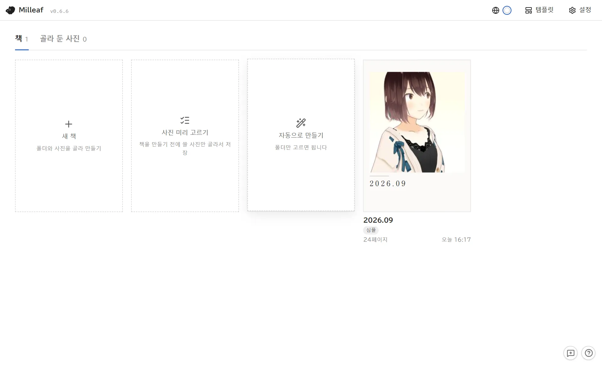
책장. 만든 책이 나란히 놓입니다
동작 환경
OS
Windows 10 / 11(64비트)
표시 언어
日本語 / English / 한국어 / 繁體中文 / 简体中文(오른쪽 위의 지구 버튼이나 ‘설정’에서 전환)
인터넷
필요하지 않습니다. 사진이나 책의 내용을 외부로 보내지 않습니다
VRChat 책
VRChat 안에서 읽을 수 있는 책을 만들 때만 Unity와 VRChat SDK, Modular Avatar가 필요합니다(6장)
정식판과 체험판
체험판은 무료입니다. 책을 만들고 고치는 기능은 정식판과 같으며, 내보내기 횟수와 템플릿 내보내기·추가에 제한이 있습니다.
고른 폴더 안에 (제목)_Milleaf-v(버전)_PDF처럼 형식별 폴더가 생기고, 그 안에 저장됩니다.
체험판의 내보내기는 종류와 관계없이 하루 3회까지입니다. 내보내기 화면에 오늘 남은 횟수가 나옵니다.
종이책으로 만들 때
인쇄소용 내보내기는 350 dpi, 재단 여유 3 mm, 재단선 없음입니다.
중철은 4의 배수 페이지 수, 무선철은 20~304페이지 사이의 짝수 페이지 수가 필요합니다. 맞지 않을 때는 내보내기 화면에 표시됩니다.
동인지 인쇄소 내보내기에는 입고 안내(nyuukou.txt, 일본어)가 함께 들어갑니다.
인쇄소용 내보내기는 일본의 인쇄소를 위한 기능입니다. 온라인 인쇄소 그래픽(Graphic)과 동인지 인쇄소에 맞춘 설정이 들어 있고, CMYK는 Japan Color 2001 Coated로 변환합니다. 다른 나라의 인쇄소는 판형, 재단 여유, 색 설정이 다를 수 있으니 주문하기 전에 인쇄소에 확인해 주세요.
6VRChat 안에서 읽을 수 있는 책
아바타에게 들려서 VRChat 안에서 페이지를 넘길 수 있는 책을 내보낼 수 있습니다. PC판 VRChat용이며, Quest는 지원하지 않습니다.
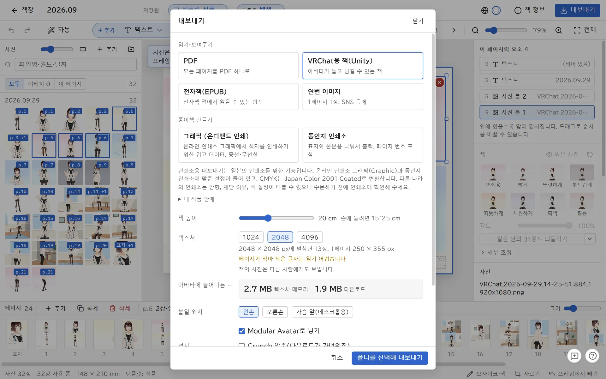
VRChat용 책 설정. 아바타에 늘어나는 용량도 나옵니다
필요한 것
아바타를 업로드할 수 있는 Unity 프로젝트(Unity 2022.3과 VRChat SDK의 Avatars. 2022.3.22f1에서 동작을 확인했습니다)
Modular Avatar(1.18에서 동작을 확인했습니다). VCC(VRChat Creator Companion)나 ALCOM으로 먼저 프로젝트에 넣어 둡니다
내보내기 설정
책 높이(손에 들려면 15~25 cm), 텍스처 크기(1024·2048·4096), 붙일 위치(왼손·오른손·가슴 앞)를 고릅니다. 데스크톱(VR 없음)에서 쓴다면 ‘가슴 앞’이 보기 편한 위치입니다.